Eric Vaz Lab
Geocomputation · GeoAI · Complexity Science · Quantum Computing
Using spatial analysis, complex systems modelling, GIScience and GeoAI to understand regional dynamics, cities, resilience and the Anthropocene.
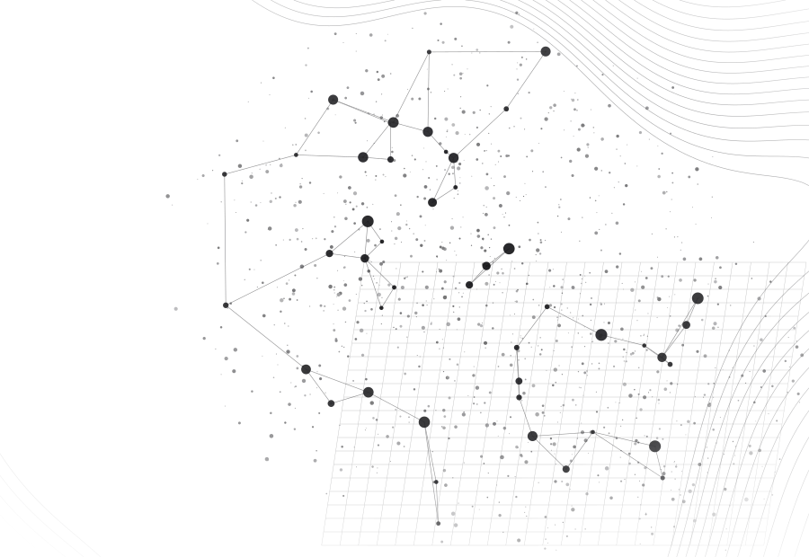
Research Areas
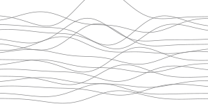
Cellular automata, Markov chains and agent-based models for simulating urban and land-use change at regional scale.
→Spatial statistics, GIScience and spatial econometrics — autocorrelation, gravity models and landscape metrics.
→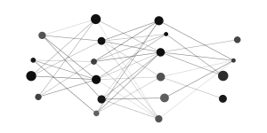
Machine learning, self-organising maps and spatial regressions for prediction, pattern recognition and decision support.
→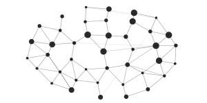
Emergence, networks, spatial equilibria and adaptive behaviour in regional and urban systems.
→Emerging Frontier
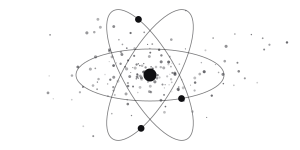
Quantum machine learning and quantum-enhanced spatial econometrics for optimisation and environmental modelling.
→Selected Work
View all publications →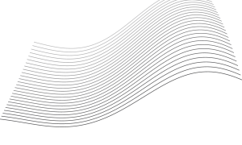
2024
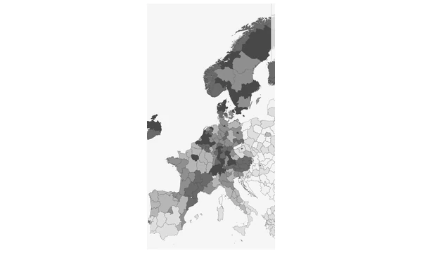
2026
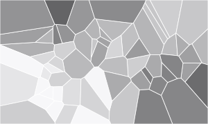
2026
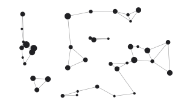
2021
2021
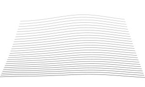
2026
Systems & Platforms
View all projects →A geospatial data platform for accessing, visualising and analysing open data at multiple scales.
Explore →A spatial learning platform for education, training and capacity building in GIScience.
Explore →A smart tourism analytics platform for visitor insights, destination intelligence and planning.
Explore →News
About Eric Vaz
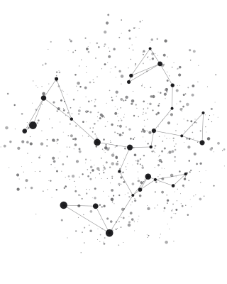
Eric Vaz is a Full Professor in the Department of Geography and Environmental Studies at Toronto Metropolitan University, working at the intersection of GIScience, regional science, complex systems and spatial intelligence. His research explores how spatial data, computation and theory can inform decision-making for cities, regions, sustainability, health and the Anthropocene.
He holds a Ph.D. in Information Management from NOVA University of Lisbon and a post-doctorate in GIS & Science from Heidelberg University, where he led the GIScience Research Group. He has authored more than 90 peer-reviewed articles and seven Springer monographs and edited volumes, and served as President of the Canadian Regional Science Association.
His work integrates geocomputation, GeoAI and complexity science to build models, platforms and applications that generate regional intelligence and support resilient, sustainable futures — increasingly including quantum approaches to spatial optimisation.
Learn more about Eric →Contact
Jorgenson Hall, JOR-620
Department of Geography & Environmental Studies
380 Victoria Street, Toronto, ON M5B 2K3